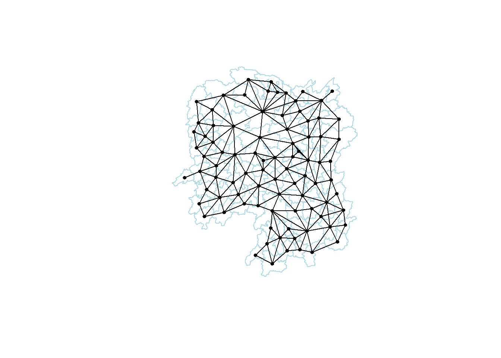
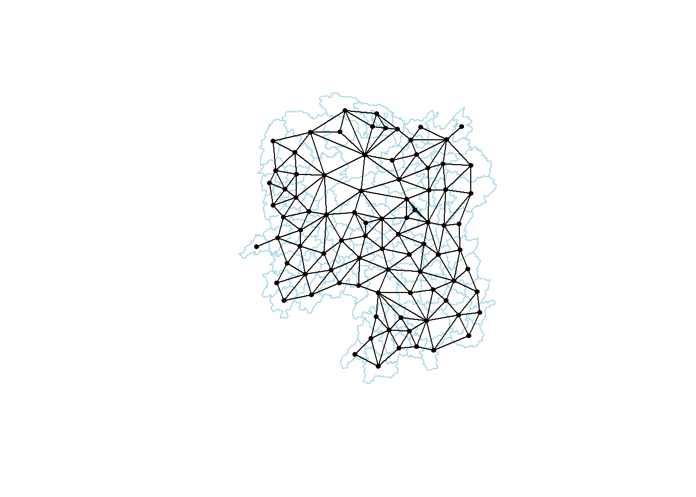
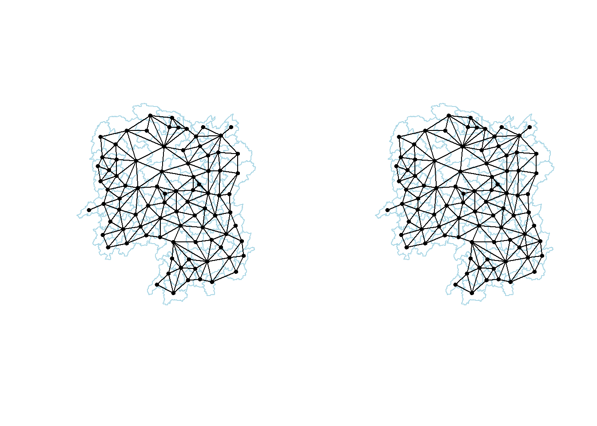

pacman::p_load(sf,tidyverse,spdep, tmap)In Class Exercise 1
Overview
In Class Exercise 1
Getting Started
The code chunk below install & load sf, spdep, tmap & tidyverse packages into the R env
Importing Hunan Geospatial sf
hunan_sf = st_read(dsn="data/geospatial", layer="Hunan")Reading layer `Hunan' from data source
`D:\Allanckw\ISSS624\In-Class_Ex1\data\geospatial' using driver `ESRI Shapefile'
Simple feature collection with 88 features and 7 fields
Geometry type: POLYGON
Dimension: XY
Bounding box: xmin: 108.7831 ymin: 24.6342 xmax: 114.2544 ymax: 30.12812
Geodetic CRS: WGS 84Loading Hunan 2012 Aspatial File in CSV
hunan_GDP = read_csv("data/aspatial/hunan_2012.csv")Rows: 88 Columns: 29
── Column specification ────────────────────────────────────────────────────────
Delimiter: ","
chr (2): County, City
dbl (27): avg_wage, deposite, FAI, Gov_Rev, Gov_Exp, GDP, GDPPC, GIO, Loan, ...
ℹ Use `spec()` to retrieve the full column specification for this data.
ℹ Specify the column types or set `show_col_types = FALSE` to quiet this message.Joining attribute data to the simple feature files
Next, left_join() of dplyr is used to join the geographical data and attribute table
hunan = left_join(hunan_sf, hunan_GDP)Joining, by = "County"Visualizing Regional Development Indicator
Using the tmap package, we can visualize the distribution of GDPPC 2012
basemap = tm_shape(hunan) +
tm_polygons()
gdppc = tm_shape(hunan) +
tm_polygons("GDPPC")
tmap_arrange(basemap, gdppc, asp=1, ncol=2)
Computing Contiguity Spatial Weights
In this section, the poly2nb() function of the spdep package is used to compute contiguity weight matrices for the study area
- The function builds a neighbour list based on regions with contiguous boundaries, the default of the algorithm uses Queens case, unless explicitly set to false
wm_q = poly2nb(hunan)
summary(wm_q)Neighbour list object:
Number of regions: 88
Number of nonzero links: 448
Percentage nonzero weights: 5.785124
Average number of links: 5.090909
Link number distribution:
1 2 3 4 5 6 7 8 9 11
2 2 12 16 24 14 11 4 2 1
2 least connected regions:
30 65 with 1 link
1 most connected region:
85 with 11 linkswm_r = poly2nb(hunan, queen = FALSE)
summary(wm_r)Neighbour list object:
Number of regions: 88
Number of nonzero links: 440
Percentage nonzero weights: 5.681818
Average number of links: 5
Link number distribution:
1 2 3 4 5 6 7 8 9 10
2 2 12 20 21 14 11 3 2 1
2 least connected regions:
30 65 with 1 link
1 most connected region:
85 with 10 linksFrom the results, there are 88 regions in Hunan,
Using the Queen’s method, 85 of them has 11 neighbours, while only 2 of them has 1 neighbour
Using the Rook’s method 85 of them has 10 neighbours, while only 2 of them has 1 neighbour
To see neighbours for polygons in the objects, we could reference them like the below for the first polygon:
wm_q[[1]][1] 2 3 4 57 85From the result, we know Polygon 1 has 5 neighbours, the numbers represents the polygon IDs of the respective neighbours stored in the hunan SpatialPolygonsDataFrame class
We can retrieve the county name of polygon ID 1 by using
hunan$County[1][1] "Anxiang"To reveal the names of the 5 neighbours, we can use
hunan$County[c(2,3,4,57,85)][1] "Hanshou" "Jinshi" "Li" "Nan" "Taoyuan"To reveal the GDPPC of these 5 counties, we can use
nb1 = wm_q[[1]]
nb1 = hunan$GDPPC[nb1]
nb1[1] 20981 34592 24473 21311 22879The result displays the 5 nearest neighbours based on Queen’s method
The complete weight matrix can be displayed by using the str() function
str(wm_q)List of 88
$ : int [1:5] 2 3 4 57 85
$ : int [1:5] 1 57 58 78 85
$ : int [1:4] 1 4 5 85
$ : int [1:4] 1 3 5 6
$ : int [1:4] 3 4 6 85
$ : int [1:5] 4 5 69 75 85
$ : int [1:4] 67 71 74 84
$ : int [1:7] 9 46 47 56 78 80 86
$ : int [1:6] 8 66 68 78 84 86
$ : int [1:8] 16 17 19 20 22 70 72 73
$ : int [1:3] 14 17 72
$ : int [1:5] 13 60 61 63 83
$ : int [1:4] 12 15 60 83
$ : int [1:3] 11 15 17
$ : int [1:4] 13 14 17 83
$ : int [1:5] 10 17 22 72 83
$ : int [1:7] 10 11 14 15 16 72 83
$ : int [1:5] 20 22 23 77 83
$ : int [1:6] 10 20 21 73 74 86
$ : int [1:7] 10 18 19 21 22 23 82
$ : int [1:5] 19 20 35 82 86
$ : int [1:5] 10 16 18 20 83
$ : int [1:7] 18 20 38 41 77 79 82
$ : int [1:5] 25 28 31 32 54
$ : int [1:5] 24 28 31 33 81
$ : int [1:4] 27 33 42 81
$ : int [1:3] 26 29 42
$ : int [1:5] 24 25 33 49 54
$ : int [1:3] 27 37 42
$ : int 33
$ : int [1:8] 24 25 32 36 39 40 56 81
$ : int [1:8] 24 31 50 54 55 56 75 85
$ : int [1:5] 25 26 28 30 81
$ : int [1:3] 36 45 80
$ : int [1:6] 21 41 47 80 82 86
$ : int [1:6] 31 34 40 45 56 80
$ : int [1:4] 29 42 43 44
$ : int [1:4] 23 44 77 79
$ : int [1:5] 31 40 42 43 81
$ : int [1:6] 31 36 39 43 45 79
$ : int [1:6] 23 35 45 79 80 82
$ : int [1:7] 26 27 29 37 39 43 81
$ : int [1:6] 37 39 40 42 44 79
$ : int [1:4] 37 38 43 79
$ : int [1:6] 34 36 40 41 79 80
$ : int [1:3] 8 47 86
$ : int [1:5] 8 35 46 80 86
$ : int [1:5] 50 51 52 53 55
$ : int [1:4] 28 51 52 54
$ : int [1:5] 32 48 52 54 55
$ : int [1:3] 48 49 52
$ : int [1:5] 48 49 50 51 54
$ : int [1:3] 48 55 75
$ : int [1:6] 24 28 32 49 50 52
$ : int [1:5] 32 48 50 53 75
$ : int [1:7] 8 31 32 36 78 80 85
$ : int [1:6] 1 2 58 64 76 85
$ : int [1:5] 2 57 68 76 78
$ : int [1:4] 60 61 87 88
$ : int [1:4] 12 13 59 61
$ : int [1:7] 12 59 60 62 63 77 87
$ : int [1:3] 61 77 87
$ : int [1:4] 12 61 77 83
$ : int [1:2] 57 76
$ : int 76
$ : int [1:5] 9 67 68 76 84
$ : int [1:4] 7 66 76 84
$ : int [1:5] 9 58 66 76 78
$ : int [1:3] 6 75 85
$ : int [1:3] 10 72 73
$ : int [1:3] 7 73 74
$ : int [1:5] 10 11 16 17 70
$ : int [1:5] 10 19 70 71 74
$ : int [1:6] 7 19 71 73 84 86
$ : int [1:6] 6 32 53 55 69 85
$ : int [1:7] 57 58 64 65 66 67 68
$ : int [1:7] 18 23 38 61 62 63 83
$ : int [1:7] 2 8 9 56 58 68 85
$ : int [1:7] 23 38 40 41 43 44 45
$ : int [1:8] 8 34 35 36 41 45 47 56
$ : int [1:6] 25 26 31 33 39 42
$ : int [1:5] 20 21 23 35 41
$ : int [1:9] 12 13 15 16 17 18 22 63 77
$ : int [1:6] 7 9 66 67 74 86
$ : int [1:11] 1 2 3 5 6 32 56 57 69 75 ...
$ : int [1:9] 8 9 19 21 35 46 47 74 84
$ : int [1:4] 59 61 62 88
$ : int [1:2] 59 87
- attr(*, "class")= chr "nb"
- attr(*, "region.id")= chr [1:88] "1" "2" "3" "4" ...
- attr(*, "call")= language poly2nb(pl = hunan)
- attr(*, "type")= chr "queen"
- attr(*, "sym")= logi TRUEVisualizing contiguity weights
In a connectivity graph, each point’s neighbouring points are represented by a line. As the exercise is focused on polygons, points needs to be created before we can build connectivity graphs. Polygon centroids will be the mechanism used for this purpose.
Getting Latitude and Longitude of Polygon Centroids
Before we can create the connectivity graph, we must assign points to each polygon. For this to function, we need the coordinates in a separate data frame. We’ll utilize a mapping function to accomplish this. The mapping function creates a vector of identical length by applying a specified function to each element of a vector. We will use the geometry column of us.bound as our input vector.
st_centroid from the sf package & map_dblfrom the purrr package will be used to accomplish this. We can map the st_centroid function over the geometry column us.bounds to obtain our required values.
The longitude is the first variable in each centroid, this enables us to obtain only the longitude.
The latitude is the second variable in each centroid, this enables us to obtain only the latitude
Using the double bracket notation [[]] and the index, we can access the latitude & longitude values.
longitude = map_dbl(hunan$geometry, ~st_centroid(.x)[[1]]) #longitude index 1 latitude = map_dbl(hunan$geometry, ~st_centroid(.x)[[2]]) #latitude index 2After getting the longitude and latitudes, we can form the coordinates object named
coordusingcbindUsing the
headfunction, we can inspect the elements ofcoordto verify if they are correctly formattedcoord = cbind(longitude, latitude) head(coord)longitude latitude [1,] 112.1531 29.44362 [2,] 112.0372 28.86489 [3,] 111.8917 29.47107 [4,] 111.7031 29.74499 [5,] 111.6138 29.49258 [6,] 111.0341 29.79863
Plotting Queen contiguity based neighbours map
We can now plot the contiguity graph with our coord object
Using Queen’s method with wm_q
plot(hunan$geometry, border="lightblue")
plot(wm_q, coord, pch = 19, cex = 0.6, add = TRUE, col= "black")
Using Rook’s Method with wm_r
plot(hunan$geometry, border="lightblue")
plot(wm_r, coord, pch = 19, cex = 0.6, add = TRUE, col= "black")
Plotting both Rook’s & Queen’s method
par(mfrow=c(1,2))
plot(hunan$geometry, border="lightblue")
plot(wm_r, coord, pch = 19, cex = 0.6, add = TRUE, col= "black")
plot(hunan$geometry, border="lightblue")
plot(wm_q, coord, pch = 19, cex = 0.6, add = TRUE, col= "black")
Computing distance based neighbours
With the use of Neighbourhood contiguity by distance - dnearneigh() of spdep package, we can determine the distance based weight matrix.
The function looks for neighbours of regions points by Euclidean distance between the lower (>=) and upper (<=) bound or with the parameter longlat = True by great circle distance in km
Find the lower and upper bounds
Using the k nearest neighbour (knn) algorithm, we can return a matrix with indices of points that belongs to the set of k nearest neighbours of each others by using
knearneigh()of spdepConvert the knn objects into a neighbours list of class nb with a list of integer vectors containing neighbour region number ids by using
knn2nb()Return the length of neighbour relationship edges by using
nbdists()of spdep. The function returns in the units of coordinates if the coordinates are projected, in km otherwise.Remove the list structure of the return objects by using
unlist()
k1 = knn2nb(knearneigh(coord)) #returns a list of nb objects from the result of k nearest neighbours matrix, Step 1 & 2
k1dist = unlist(nbdists(k1, coord, longlat = TRUE)) #return the length of neighbour relationship edges and remove the list structures, Step 3 & 4
summary(k1dist) Min. 1st Qu. Median Mean 3rd Qu. Max.
24.79 32.57 38.01 39.07 44.52 61.79 From the result, the largest first nearest neighbour is 61.79km, hence by using this as the upper bound, we can be certain that all units will have at least 1 neighbour
Finding the fixed distanced weight matrix
dnearneigh will be used to compute the distance weight matrix
wm_d62 = dnearneigh(coord, 0, 62, longlat = TRUE)
wm_d62Neighbour list object:
Number of regions: 88
Number of nonzero links: 324
Percentage nonzero weights: 4.183884
Average number of links: 3.681818 The average number of links denotes the number of non zero links divided by the number of regions. In this case, a region has about on average between 3-4 neighbours
Next, we will use str() to display the content of wm_d62 weight matrix.
str(wm_d62)List of 88
$ : int [1:5] 3 4 5 57 64
$ : int [1:4] 57 58 78 85
$ : int [1:4] 1 4 5 57
$ : int [1:3] 1 3 5
$ : int [1:4] 1 3 4 85
$ : int 69
$ : int [1:2] 67 84
$ : int [1:4] 9 46 47 78
$ : int [1:4] 8 46 68 84
$ : int [1:4] 16 22 70 72
$ : int [1:3] 14 17 72
$ : int [1:5] 13 60 61 63 83
$ : int [1:4] 12 15 60 83
$ : int [1:2] 11 17
$ : int 13
$ : int [1:4] 10 17 22 83
$ : int [1:3] 11 14 16
$ : int [1:3] 20 22 63
$ : int [1:5] 20 21 73 74 82
$ : int [1:5] 18 19 21 22 82
$ : int [1:6] 19 20 35 74 82 86
$ : int [1:4] 10 16 18 20
$ : int [1:3] 41 77 82
$ : int [1:4] 25 28 31 54
$ : int [1:4] 24 28 33 81
$ : int [1:4] 27 33 42 81
$ : int [1:2] 26 29
$ : int [1:6] 24 25 33 49 52 54
$ : int [1:2] 27 37
$ : int 33
$ : int [1:2] 24 36
$ : int 50
$ : int [1:5] 25 26 28 30 81
$ : int [1:3] 36 45 80
$ : int [1:6] 21 41 46 47 80 82
$ : int [1:5] 31 34 45 56 80
$ : int [1:2] 29 42
$ : int [1:3] 44 77 79
$ : int [1:4] 40 42 43 81
$ : int [1:3] 39 45 79
$ : int [1:5] 23 35 45 79 82
$ : int [1:5] 26 37 39 43 81
$ : int [1:3] 39 42 44
$ : int [1:2] 38 43
$ : int [1:6] 34 36 40 41 79 80
$ : int [1:5] 8 9 35 47 86
$ : int [1:5] 8 35 46 80 86
$ : int [1:5] 50 51 52 53 55
$ : int [1:4] 28 51 52 54
$ : int [1:6] 32 48 51 52 54 55
$ : int [1:4] 48 49 50 52
$ : int [1:6] 28 48 49 50 51 54
$ : int [1:2] 48 55
$ : int [1:5] 24 28 49 50 52
$ : int [1:4] 48 50 53 75
$ : int 36
$ : int [1:5] 1 2 3 58 64
$ : int [1:5] 2 57 64 66 68
$ : int [1:3] 60 87 88
$ : int [1:4] 12 13 59 61
$ : int [1:5] 12 60 62 63 87
$ : int [1:4] 61 63 77 87
$ : int [1:5] 12 18 61 62 83
$ : int [1:4] 1 57 58 76
$ : int 76
$ : int [1:5] 58 67 68 76 84
$ : int [1:2] 7 66
$ : int [1:4] 9 58 66 84
$ : int [1:2] 6 75
$ : int [1:3] 10 72 73
$ : int [1:2] 73 74
$ : int [1:3] 10 11 70
$ : int [1:4] 19 70 71 74
$ : int [1:5] 19 21 71 73 86
$ : int [1:2] 55 69
$ : int [1:3] 64 65 66
$ : int [1:3] 23 38 62
$ : int [1:2] 2 8
$ : int [1:4] 38 40 41 45
$ : int [1:5] 34 35 36 45 47
$ : int [1:5] 25 26 33 39 42
$ : int [1:6] 19 20 21 23 35 41
$ : int [1:4] 12 13 16 63
$ : int [1:4] 7 9 66 68
$ : int [1:2] 2 5
$ : int [1:4] 21 46 47 74
$ : int [1:4] 59 61 62 88
$ : int [1:2] 59 87
- attr(*, "class")= chr "nb"
- attr(*, "region.id")= chr [1:88] "1" "2" "3" "4" ...
- attr(*, "call")= language dnearneigh(x = coord, d1 = 0, d2 = 62, longlat = TRUE)
- attr(*, "dnn")= num [1:2] 0 62
- attr(*, "bounds")= chr [1:2] "GE" "LE"
- attr(*, "nbtype")= chr "distance"
- attr(*, "sym")= logi TRUEAnother way to display the structure of the weight matrix is to combine table() and card() of spdep.
The
card()function counts the neighboring regions in the neighbours list.table()creates a contingency table of the counts for each combination of factor levels using cross-classifying factors.
cardinality = card(wm_d62)
table(hunan$County, cardinality) cardinality
1 2 3 4 5 6
Anhua 1 0 0 0 0 0
Anren 0 0 0 1 0 0
Anxiang 0 0 0 0 1 0
Baojing 0 0 0 0 1 0
Chaling 0 0 1 0 0 0
Changning 0 0 1 0 0 0
Changsha 0 0 0 1 0 0
Chengbu 0 1 0 0 0 0
Chenxi 0 0 0 1 0 0
Cili 0 1 0 0 0 0
Dao 0 0 0 1 0 0
Dongan 0 0 1 0 0 0
Dongkou 0 0 0 1 0 0
Fenghuang 0 0 0 1 0 0
Guidong 0 0 1 0 0 0
Guiyang 0 0 0 1 0 0
Guzhang 0 0 0 0 0 1
Hanshou 0 0 0 1 0 0
Hengdong 0 0 0 0 1 0
Hengnan 0 0 0 0 1 0
Hengshan 0 0 0 0 0 1
Hengyang 0 0 0 0 0 1
Hongjiang 0 0 0 0 1 0
Huarong 0 0 0 1 0 0
Huayuan 0 0 0 1 0 0
Huitong 0 0 0 1 0 0
Jiahe 0 0 0 0 1 0
Jianghua 0 0 1 0 0 0
Jiangyong 0 1 0 0 0 0
Jingzhou 0 1 0 0 0 0
Jinshi 0 0 0 1 0 0
Jishou 0 0 0 0 0 1
Lanshan 0 0 0 1 0 0
Leiyang 0 0 0 1 0 0
Lengshuijiang 0 0 1 0 0 0
Li 0 0 1 0 0 0
Lianyuan 0 0 0 0 1 0
Liling 0 1 0 0 0 0
Linli 0 0 0 1 0 0
Linwu 0 0 0 1 0 0
Linxiang 1 0 0 0 0 0
Liuyang 0 1 0 0 0 0
Longhui 0 0 1 0 0 0
Longshan 0 1 0 0 0 0
Luxi 0 0 0 0 1 0
Mayang 0 0 0 0 0 1
Miluo 0 0 0 0 1 0
Nan 0 0 0 0 1 0
Ningxiang 0 0 0 1 0 0
Ningyuan 0 0 0 0 1 0
Pingjiang 0 1 0 0 0 0
Qidong 0 0 1 0 0 0
Qiyang 0 0 1 0 0 0
Rucheng 0 1 0 0 0 0
Sangzhi 0 1 0 0 0 0
Shaodong 0 0 0 0 1 0
Shaoshan 0 0 0 0 1 0
Shaoyang 0 0 0 1 0 0
Shimen 1 0 0 0 0 0
Shuangfeng 0 0 0 0 0 1
Shuangpai 0 0 0 1 0 0
Suining 0 0 0 0 1 0
Taojiang 0 1 0 0 0 0
Taoyuan 0 1 0 0 0 0
Tongdao 0 1 0 0 0 0
Wangcheng 0 0 0 1 0 0
Wugang 0 0 1 0 0 0
Xiangtan 0 0 0 1 0 0
Xiangxiang 0 0 0 0 1 0
Xiangyin 0 0 0 1 0 0
Xinhua 0 0 0 0 1 0
Xinhuang 1 0 0 0 0 0
Xinning 0 1 0 0 0 0
Xinshao 0 0 0 0 0 1
Xintian 0 0 0 0 1 0
Xupu 0 1 0 0 0 0
Yanling 0 0 1 0 0 0
Yizhang 1 0 0 0 0 0
Yongshun 0 0 0 1 0 0
Yongxing 0 0 0 1 0 0
You 0 0 0 1 0 0
Yuanjiang 0 0 0 0 1 0
Yuanling 1 0 0 0 0 0
Yueyang 0 0 1 0 0 0
Zhijiang 0 0 0 0 1 0
Zhongfang 0 0 0 1 0 0
Zhuzhou 0 0 0 0 1 0
Zixing 0 0 1 0 0 0n.comp.nb() finds the number of disjoint connected subgraphs in the graph depicted by nb.obj - a spatial neighbours list object using depth first search
n_comp = n.comp.nb(wm_d62)It returns
- nc: number of disjoint connected subgraphs
comp.id: vector with the indices of the disjoint connected subgraphs that the nodes in nb.obj belong to, in this case the distance weight matrix
n_comp$nc[1] 1#n_comp$comp.id
table(n_comp$comp.id)
1
88 Plotting fixed distance weight matrix
Reference
Kam T.S (2022), R for Geospatial Data Science and Analytics, Chapter 3 Spatial Weights and Applications
https://r4gdsa.netlify.app/chap03.html